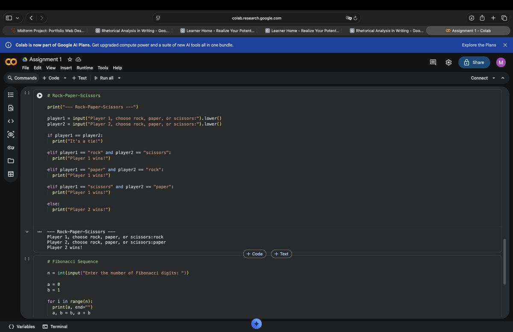
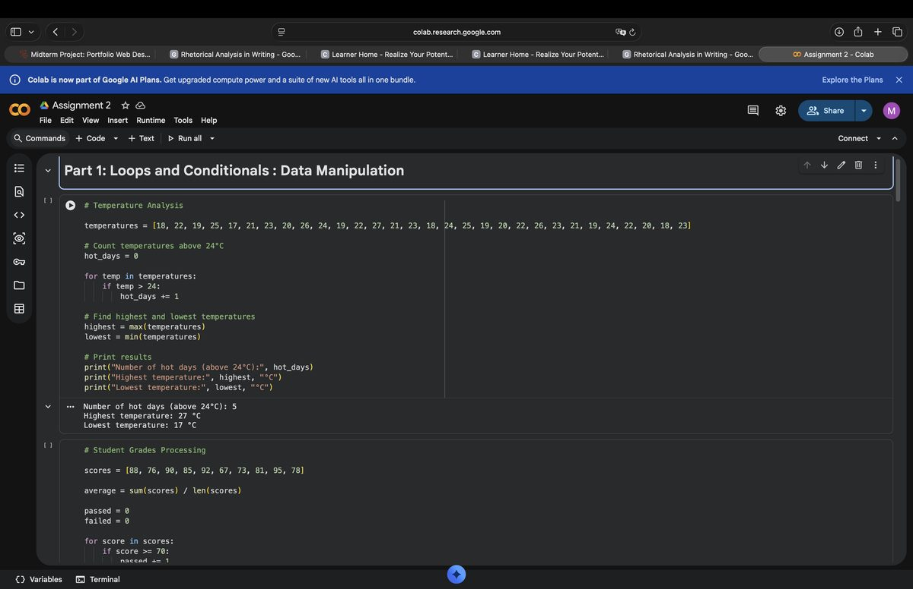
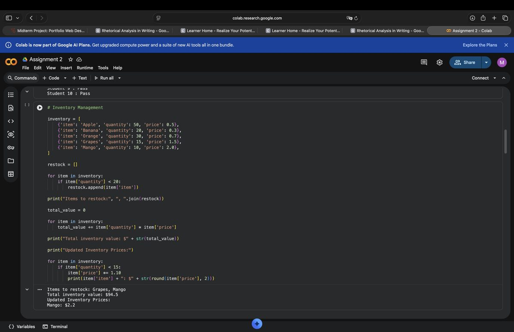
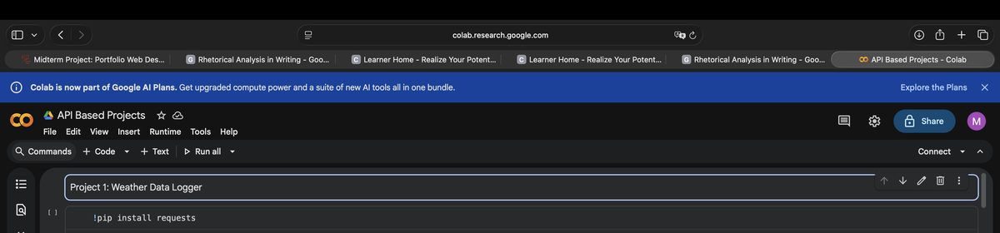

Projects
These are three class projects from Fundamentals of Software and Data, built in Python in Google Colab.
1. Assignment 1: Rock-Paper-Scissors and Fibonacci

This project uses input, conditionals, and loops. The Rock-Paper-Scissors program asks two players for a choice, compares the choices, and prints the winner or a tie. The Fibonacci program asks for a number of digits and prints the sequence using a loop.
Skills used: Python, input handling, if and elif statements, loops.
2. Data Manipulation: Temperature, Grades, and Inventory

This project works with lists of real numbers. The temperature part counts hot days above 24 degrees, and finds the highest temperature, 27 degrees, and the lowest temperature, 17 degrees. The grades part finds averages and pass and fail counts.

The inventory part uses a list of items with quantity and price. It finds items to restock, calculates total inventory value as 94.50 dollars, and updates prices for low stock items.
Skills used: Python lists, loops, conditionals, calculations.
3. Weather Data Logger: API Based Project

This project uses an external weather API to look up a city, get its coordinates, and log weather data to a CSV file. It uses the requests library, functions, and file handling. The screenshot shown here is cropped to the project title and setup only, so no API key is shown in this portfolio.
Skills used: Python, APIs, requests, functions, CSV files.